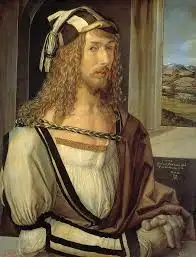

Fue un pintor, grabador y teórico alemán del Renacimiento abarco, vario temas, como
retratos, paisajes, imagenes religiosas e ilustraciones cientificas, era maestro con tecnicas como
grabados
en
madera y pinturas al oleo, sus contribuciones fueron importantes por ayudar a elevar el medio a una forma
de
arte, influyendo en generacioones siguientes.